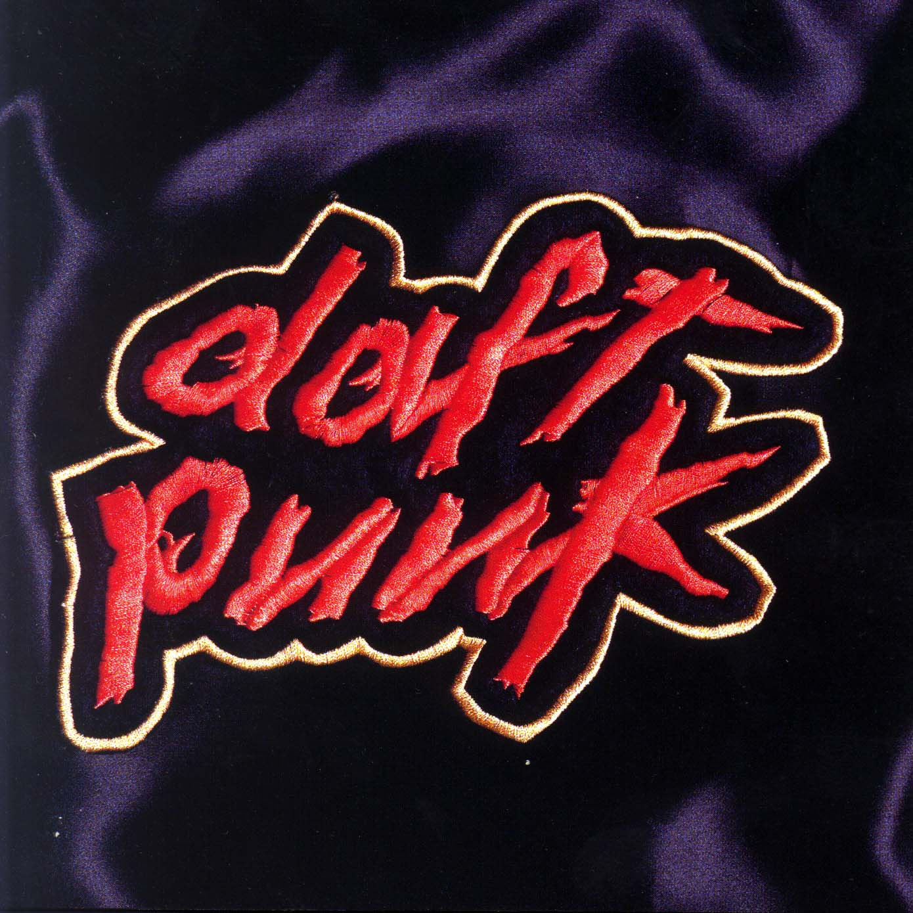
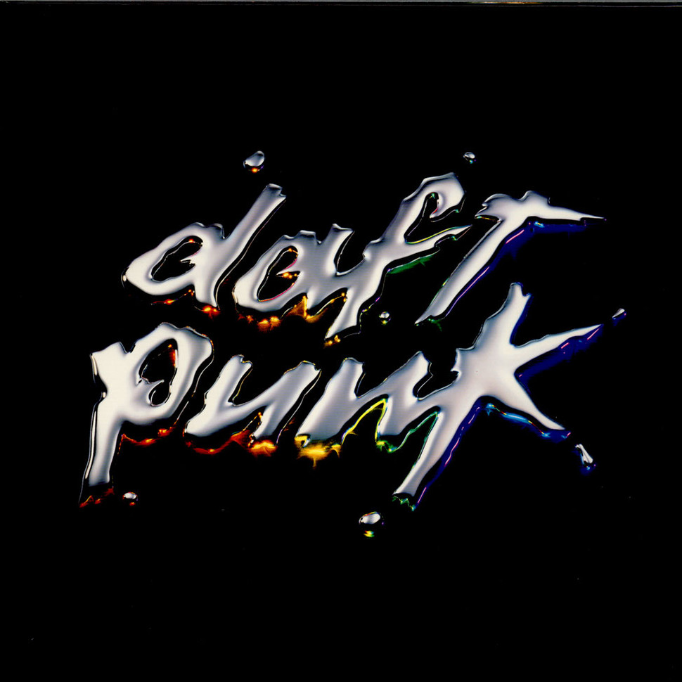
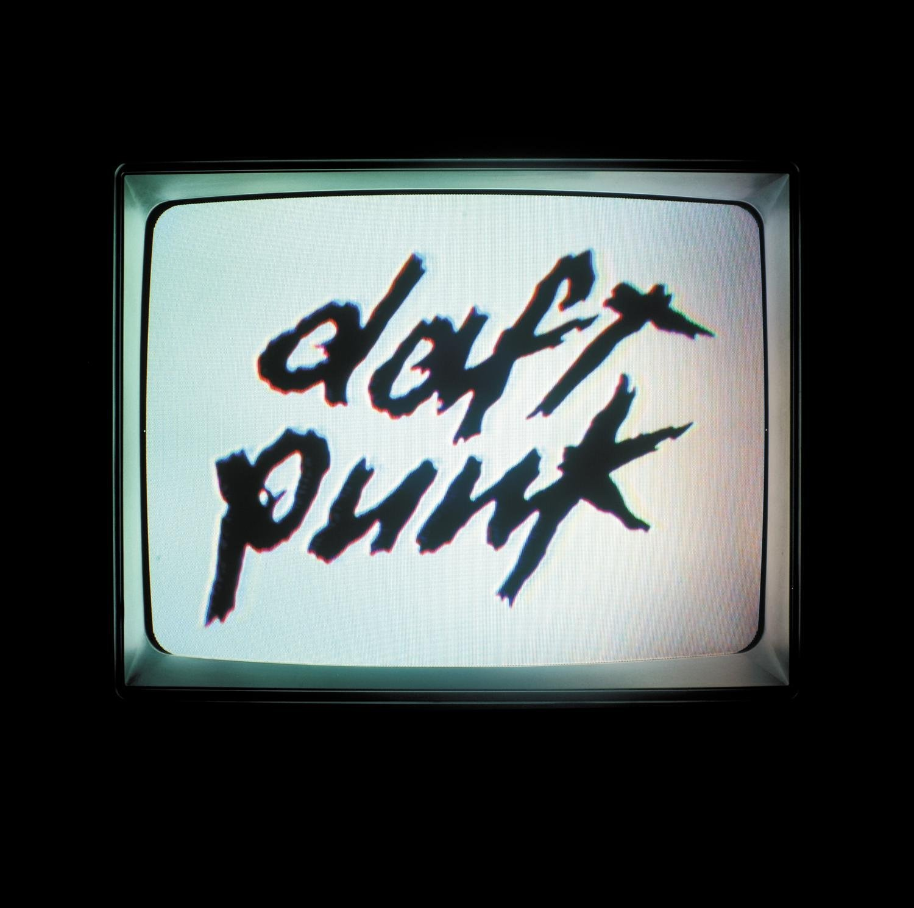
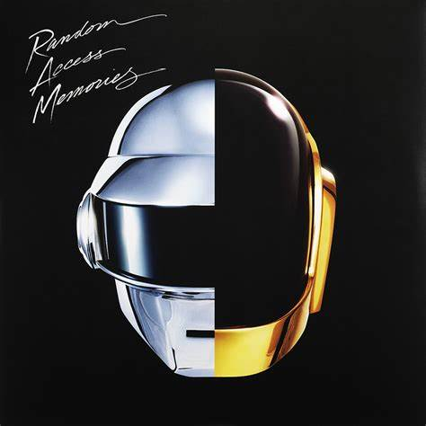

French electronic music duo Daft Punk released four studio albums, two live albums, one compilation album, one soundtrack album, four remix albums, two video albums, twenty-two singles and nineteen music videos. Group members Thomas Bangalter and Guy-Manuel de Homem-Christo met in 1987 while studying at the Lycée Carnot secondary school. They subsequently recorded several demo tracks together, forming Daft Punk in 1993. Their debut single "The New Wave" was released the following year on the Soma Quality Recordings label.[1] Daft Punk first found commercial success with the release of their second single "Da Funk", which peaked at number seven in France and topped the United States Billboard Hot Dance Club Play chart.
Discography
After signing to Virgin Records, the duo released their debut studio album Homework in January 1997. The album peaked at number three in France, earning a platinum certification from the Syndicat National de l'Édition Phonographique (SNEP). Daft Punk released their second studio album Discovery in February 2001. The album peaked at number two in France and attained a triple platinum certification from the SNEP. Following their Alive 2006/2007 tour, Daft Punk composed the score for the 2010 film Tron: Legacy and released an accompanying soundtrack album. The album produced the single "Derezzed" and became the duo's first top five album on the Billboard 200. "Get Lucky", the first single from Random Access Memories, also experienced chart success in several countries. In 2016, Daft Punk was featured on two singles from Canadian R&B singer The Weeknd entitled "Starboy" and "I Feel It Coming". The former topped charts in several countries and received a platinum certification from the RIAA, while the latter peaked at number one in France and earned a diamond certification from the SNEP.
| Album | Year | Album Cover | Best Song | Play |
|---|---|---|---|---|
| Homework | 1997 |  | Around the World | |
| Discovery | 2001 |  | One more Time | |
| Human After All | 2005 |  | Technologic | |
| Random Acces Memories | 2013 |  | Get Lucky |
Concert and Tours
- Daftendirektour
- Alive 2007
Daftendirektour was the first concert tour by the French electronic music duo Daft Punk. The tour spanned from February to December 1997.
For this tour, Daft Punk used their home studio equipment for the live stage. As Thomas Bangalter of the duo stated, "Everything was synched up—the drum machines, the bass lines. The sequencer was just sending out the tempos and controlling the beats and bars. On top of this structure we built all these layers of samples and various parts that we could bring in whenever we wanted to." Little video footage from the tour has been released. A clip featuring "Rollin' & Scratchin'" can be seen on D.A.F.T.: A Story About Dogs, Androids, Firemen and Tomatoes. Elements of the track "Alive" can also be heard as it was performed at the Mayan Theater in Los Angeles, California. The band had used several machines running ARKAOS software into a custom visual setup.[citation needed] Daft Punk released a live album, Alive 1997, in 2001, which featured their performance at Que Club Birmingham on 8 November 1997. The recording was selected by Daft Punk themselves for release, as they considered it to be their favorite from the Daftendirektour. In 2022, a recording of the complete Mayan Theater set from the tour was streamed to promote the rerelease of Homework and Alive 1997.
Alive 2007 is the second live album by the French electronic music duo Daft Punk, released on 19 November 2007 by Virgin Records. It features Daft Punk's performance at the Palais Omnisports de Paris-Bercy arena in Paris on 14 June 2007 during their Alive 2007 tour. The set features an assortment of Daft Punk's music, incorporated with synthesisers, mixers and live effects. The album won the Grammy Award for Best Electronic/Dance Album in 2009. The retail release of Alive 2007 in North America was delayed to 4 December 2007 due to production problems It was released as a download on 20 November 2007, and was released in the United Kingdom on 25 February 2008. The album won a Grammy Award for Best Electronic/Dance Album in 2009. A special edition of the album was released that includes the encore from the Alive 2007 tour on a second disc.